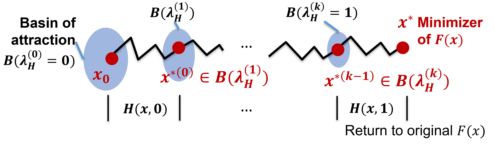
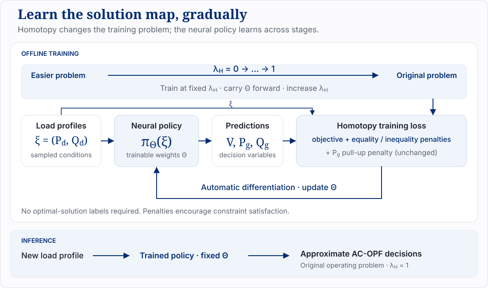
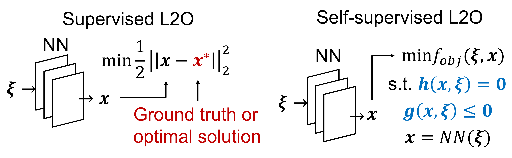
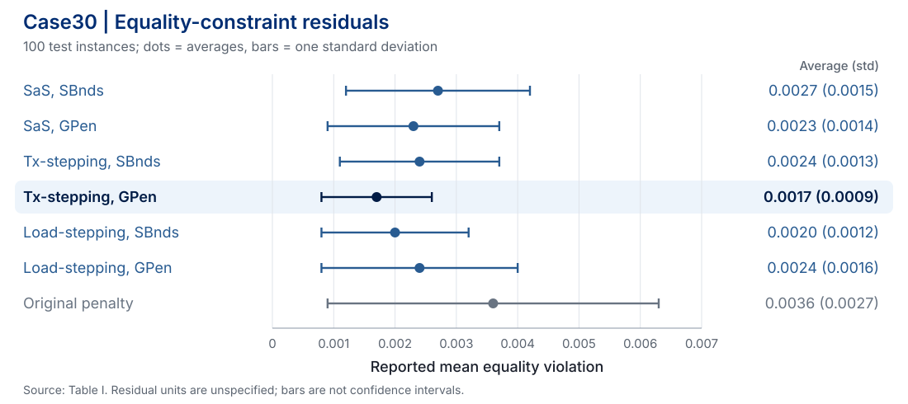

Self-supervised learning
Evaluate generation cost and physical constraints directly on the network’s predictions.
IEEE PESGM 2026 Learning to optimize · Power systems
1 University at Buffalo2 Pacific Northwest National Laboratory3 Carnegie Mellon University4 Johns Hopkins University
A neural network can predict power-system decisions from changing loads. Training that network directly against nonlinear power-flow constraints can be difficult.
This work guides self-supervised training through a sequence of easier problems, gradually restoring the original objective and constraints while carrying the learned weights forward.
Explore the method
Research summary
The method learns an approximate parametric solution to alternating-current optimal power flow (AC-OPF) using the optimization objective and constraint penalties as the training signal. It requires no solver-generated optimal labels. Two families of homotopy transformations guide training: general relaxations of the loss and constraints, and transformations that exploit power-system structure. On the reported 30-bus benchmark, these choices reduce constraint violations relative to direct penalty training.
Evaluate generation cost and physical constraints directly on the network’s predictions.
Train at a fixed homotopy parameter, advance it, and reuse the previous network weights.
Compare residuals on case30 and synthetic nonconvex problems. Benefits depend on the chosen transformation.
Scientific content and reported results follow arXiv v1, 11 November 2025. Publication metadata follows the IEEE record.
The problem
AC-OPF seeks a low-cost generation dispatch that satisfies power balance and operating bounds. Here, varying active and reactive loads form the problem parameters \(\xi\); the predicted decisions are complex bus voltages \(V\), active generation \(P_g\), and reactive generation \(Q_g\).
The challenge is in training: nonlinear AC balance creates a nonconvex loss landscape, and minimizing a weighted penalty can leave substantial constraint residuals.
Subject also to voltage-magnitude and active/reactive generation bounds, with a fixed reference-bus angle. Paper, Eq. (1).
The method
A neural policy \(x=\pi_\Theta(\xi)\) maps problem parameters to candidate decisions. During offline training, \(\lambda_H\) moves from 0 to 1. At each stage, automatic differentiation updates \(\Theta\) using the current objective and constraint penalties; the next stage starts from those weights.

Objective plus penalties for equality and inequality violations. The AC-OPF experiments add a generation pull-up penalty throughout the schedule. Eq. (5) and Appendix A.
Load stepping scales loads from zero toward their target values in the power-balance equations.
Transmission (Tx) stepping interpolates the admittance matrix from nearly shorted lines to the original network:
These transformations can be paired with Type I relaxations. They guide training without certifying the feasibility of the entire path.
Interactive explanation
Split and Shrink trains with \(-\epsilon_{\lambda_H}\le h(x,\xi)\le\epsilon_{\lambda_H}\). The AC-OPF settings use \(\epsilon_H=0.01\) and \(\epsilon_L=0\).
Tolerance ±
Each step advances λH by 0.05. The illustration shows the scheduled tolerance only; it does not simulate training or display measured residuals. A zero target tolerance does not imply a zero achieved residual.

Reported experiments
On the 30-bus AC-OPF benchmark, all six reported homotopy configurations have lower mean and maximum equality violations than the original penalty method. Tx-stepping with Grow Penalty has the smallest reported mean equality violation: 0.0017 (0.0009), compared with 0.0036 (0.0027) for direct penalty training.

| Method | Objective ($/h) | Mean equality violation | Max equality violation | Mean inequality violation | Max inequality violation |
|---|---|---|---|---|---|
| SaS + SBnds | 666 | 0.0027 (0.0015) | 0.010 (0.005) | 0.0000 (0.0000) | 0.000 (0.001) |
| SaS + GPen | 666 | 0.0023 (0.0014) | 0.008 (0.005) | 0.0000 (0.0000) | 0.000 (0.000) |
| Tx-stepping + SBnds | 665 | 0.0024 (0.0013) | 0.008 (0.005) | 0.0000 (0.0000) | 0.000 (0.000) |
| Tx-stepping + GPen | 665 | 0.0017 (0.0009) | 0.006 (0.003) | 0.0000 (0.0000) | 0.000 (0.000) |
| Load-stepping + SBnds | 666 | 0.0020 (0.0012) | 0.007 (0.004) | 0.0000 (0.0000) | 0.000 (0.000) |
| Load-stepping + GPen | 667 | 0.0024 (0.0016) | 0.009 (0.005) | 0.0000 (0.0000) | 0.000 (0.000) |
| Original penalty | 673 | 0.0036 (0.0027) | 0.013 (0.010) | 0.0000 (0.0000) | 0.001 (0.003) |
Violation entries are average (standard deviation) across test instances; units are not specified in the table. Zeros are reported at the paper’s displayed precision. Objective values describe the predicted dispatch, not a certified optimality gap. Source: Table I.
Appendix A gives learning-rate and early-stopping settings. Hardware and inference runtimes are not reported.
The paper also tests a nonconvex objective with random linear constraints at 5, 25, 50, and 100 variables. At 100 variables, SaS + SBnds reduces the reported mean inequality violation from 0.0015 (0.0023) to 0.0002 (0.0009), while its objective is higher: 272.36 versus 208.71. SaS + GPen instead has a larger mean violation, 0.0031 (0.0067). The choice of homotopy matters.
Table II, n = 100, 100 test instances; ΔλH = 0.005 and inequality weight 500. Objective and residual units are unspecified. Lower objectives from infeasible candidates do not establish better feasible solutions. Full results in Table II.
Scope and interpretation
The reported case30 comparisons show lower constraint violations than the original neural penalty baseline. The synthetic tests illustrate how different continuation choices affect the balance between objective value and residuals.
Penalty training does not provide exact feasibility or global optimality. The manuscript reports no physical-grid deployment, inference-speed benchmark, feasibility percentage, or explicit numerical comparison with a full OPF solver. Generalization beyond the sampled load conditions is not established.
Read and cite
Published in the 2026 IEEE Power & Energy Society General Meeting (PESGM), Montréal, Canada. No paper-specific public code or data release was identified in the verified author resources.
@inproceedings{li2026homotopy,
title = {Homotopy-Guided Self-Supervised Learning of Parametric
Solutions for {AC} Optimal Power Flow},
author = {Li, Shimiao and Tuor, Aaron and Vrabie, Draguna
and Pileggi, Larry and Drgona, Jan},
booktitle = {2026 IEEE Power \& Energy Society General Meeting (PESGM)},
year = {2026},
doi = {10.1109/PESGM58988.2026.11693405},
url = {https://ieeexplore.ieee.org/document/11693405/}
}The publisher’s bibliographic record was verified; the scientific presentation follows the openly available arXiv v1 manuscript, including Appendix A. The publisher full text was not available for a version-to-version comparison.